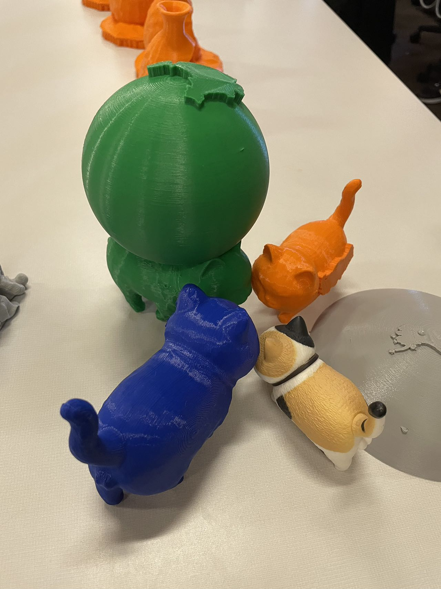

Project | 2024
猫模型与程序化实验
Cat Modeling and Procedural Experiments
一个围绕猫形象展开的三维建模与程序化实验归档，保留了雕刻文件、Houdini 工程、网格导出和过程截图。
An archive of 3D modeling and procedural experiments built around a cat form, including sculpt files, Houdini scenes, mesh exports, and process captures.
Overview | 项目简介
从目录内容来看，这个项目记录的是一个以猫为主体的三维造型练习。文件中同时包含 .psx 雕刻文件、.hipnc Houdini 工程、.stl 和 .obj 网格导出，说明它覆盖了从形体探索到格式转换的完整过程，而不只是单张渲染图。
Based on the folder contents, this project documents a cat-centered 3D form study. The presence of .psx sculpt files, .hipnc Houdini scenes, and exported .stl and .obj meshes suggests a workflow that moves from shape exploration to file conversion rather than ending at a single render.
Process | 过程
多张过程截图和多个工程版本保留了试验轨迹：既有角色本体的造型变化，也有面数处理、导出和后续程序化处理的痕迹。对作品集而言，这类归档的重要性在于它呈现了一个模型如何从草稿状态过渡到可继续加工的资产。
The screenshots and multiple project files preserve a visible trail of iteration: form changes, mesh preparation, export steps, and later procedural handling. For a portfolio, that archive matters because it shows how the object evolved from draft geometry into a reusable asset.
Media | 图像与成果
